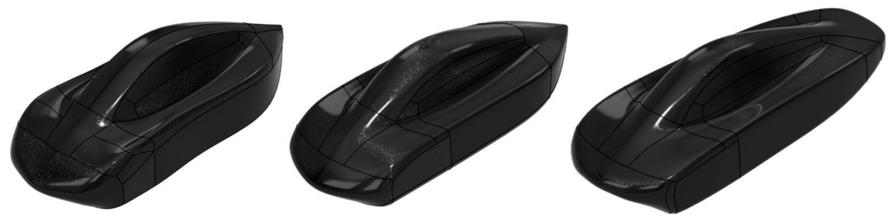
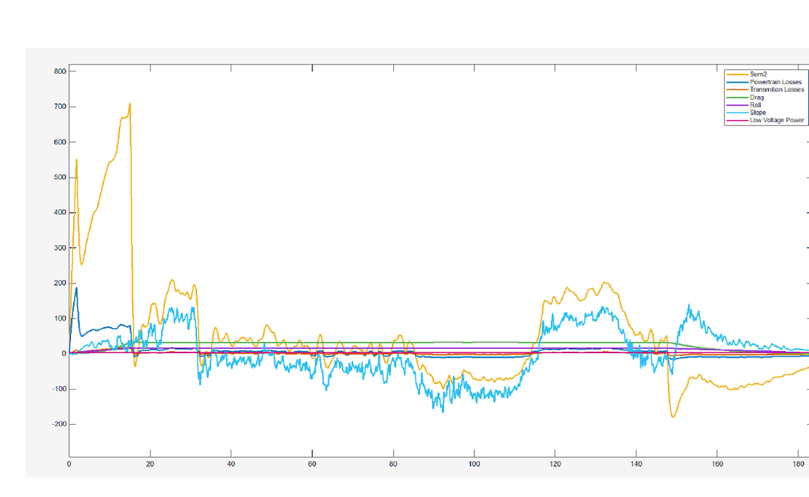
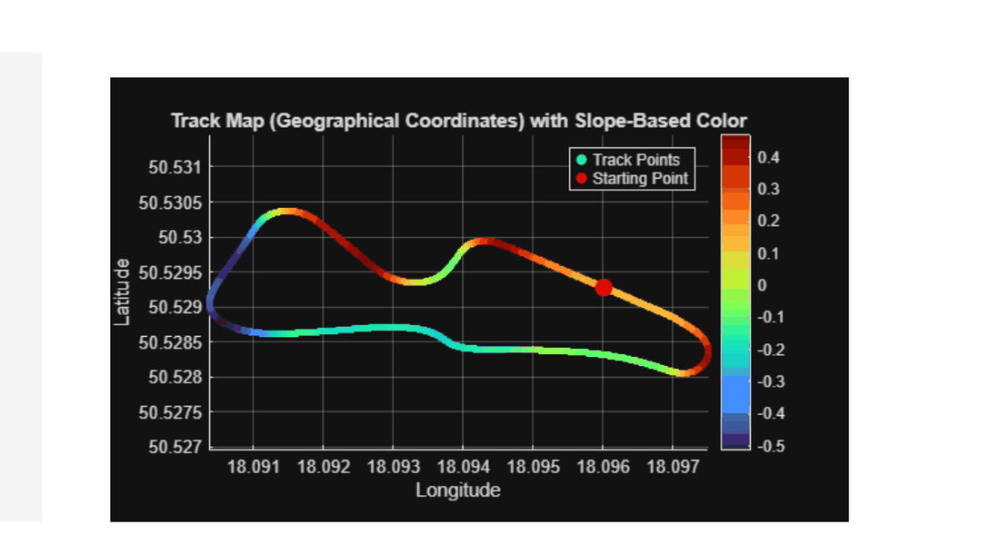

Prometheus Eco Racing / PYRFOROS IV concept phase · NTUA
Concept & Architecture.
PYRFOROS IV was governed by one rule before a single surface was drawn: every visible surface must earn its place by reducing energy consumption. A point-mass lap-simulation model, configured from the competition circuit’s geometry and elevation profile, produced an energy loss budget first. The geometry, the architecture and the four decisions below all trace back to that budget.

FIG. 01 · Exterior form at V1, V3 and V7, the same closed-loop CFD iteration that produced the frozen geometry on the PYRFOROS IV case study
The energy budget, before any geometry
Before a surface existed, the team built a point-mass lap-simulation model and evaluated an 80 kg target vehicle as a coupled system of aerodynamic, mass-dependent and powertrain energy losses across a full lap velocity profile. The model returned an unambiguous hierarchy: aerodynamic drag at 48% of total lap energy, rolling resistance from mass at 26%, powertrain and parasitic losses at 16%, low-voltage systems at 10%. Those are outputs for one modelled scenario on initial aerodynamic and rolling-resistance inputs, against the 80 kg vehicle target, not fixed fractions of every lap.
That hierarchy, not a styling brief, is why the exterior was treated as the primary efficiency lever and the structure was addressed systemically rather than reinforced piecemeal. The full aerodynamic programme that followed from the 48% figure is on the aerodynamics case study; the structural response to the 26% figure is on the monocoque case study.

The circuit set the boundary condition
The lap-simulation model was not run against a generic drive cycle. It was configured from the competition circuit itself: corner radii and elevation gradient fed the velocity profile and force inputs directly, rather than being approximated. FIG. 03 is that circuit, coloured by slope; the tight, undulating loop it shows is the boundary condition every downstream target in Section 1 was checked against.

Regulated packaging as a design generator
Fully enclosing all four wheels was not a styling choice. It was a direct response to the simulation finding that exposed, rotating tyres are responsible for a disproportionate share of total vehicle drag, and full aerodynamic concealment was set as a non-negotiable objective at project inception, before the exterior was drawn.
Enclosing the steerable front wheels inside an Urban Concept footprint is a spatial conflict: the enclosure has to fully shield the tyre from the free stream while guaranteeing zero mechanical contact at full steering lock. That single packaging constraint, not aesthetic preference, set the four primary dimensional parameters of the vehicle.
- Front and rear track widths: set by the swept volume of the steerable wheel at full lock, plus clearance to prevent rubbing under combined steer and suspension travel.
- Wheelbase: set by the swept envelope of the front axle at full lock, combined with the minimum-radius turn specification the course layout imposes.
- Steering geometry: knuckle geometry, tie-rod length and rack offset solved simultaneously with the wheel-arch profile for near-ideal Ackermann tracking, detailed on the suspension case study.
- Body stance and plan-view silhouette: once the wheel swept volumes were fixed, fuselage width, nose width and tail taper followed from the surfaces that smoothly return the free-stream flow around each enclosure.
Four decisions, closed before manufacture
Before committing PYRFOROS IV to manufacture, the team ran a structured root-cause analysis of the previous car, a steel-spaceframe platform with a non-structural fairing, and produced the engineering case for four architecture changes. Each carries a stated rationale tied to the energy budget above; the analysis and test evidence behind them is in the linked subsystem studies.
| Parameter | PYRFOROS III | PYRFOROS IV | Rationale |
|---|---|---|---|
| Chassis architecture | Steel spaceframe | Integrated CFRP monocoque | Consolidated structural and aerodynamic functions into one shell, eliminating redundant load paths. |
| Suspension system | Rigid, un-sprung | Double-wishbone front, trailing-arm rear | Isolated road-shock energy before it reached the chassis, enabling a lighter, down-gauged layup. |
| Wheel configuration | Exposed, outboard | Fully enclosed within body blisters | Enclosed wheels still account for 40.3% of residual drag even concealed; exposed wheels would have raised total drag substantially further. |
| Drivetrain coupling | Direct axle | 6:1 belt transmission | The reduction ratio was selected by overlaying the motor's efficiency map on the lap-simulation velocity profile, sizing a smaller motor and cutting a reported 20 kg from powertrain mass against the previous generation. |
Source: VDA technical submission, Table 4 (Engineering parameter evolution, PIII vs. PIV) and the belt-drive ratio selection note in the same section.